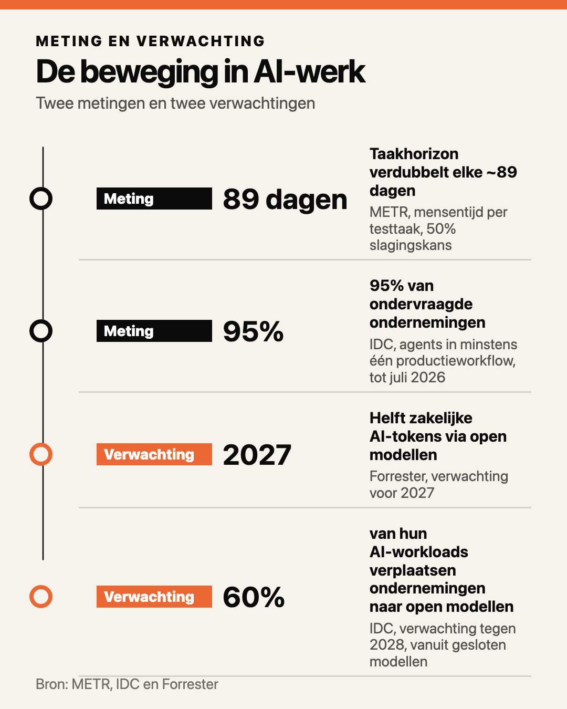
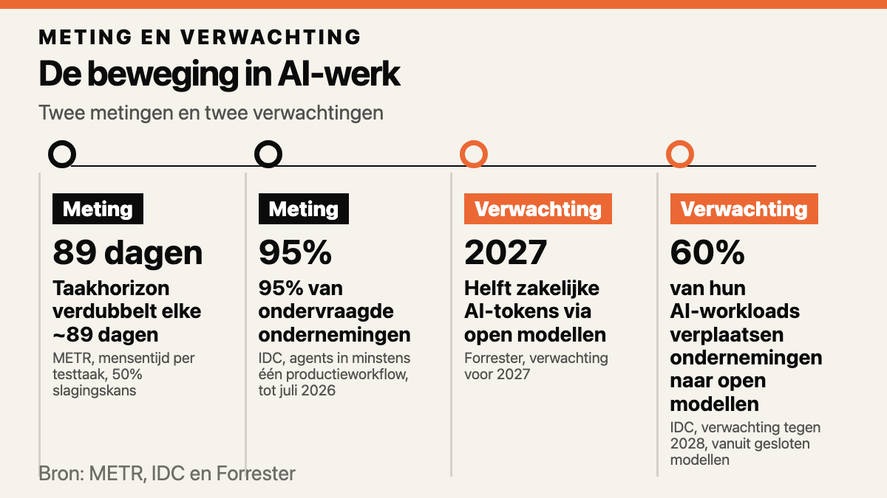
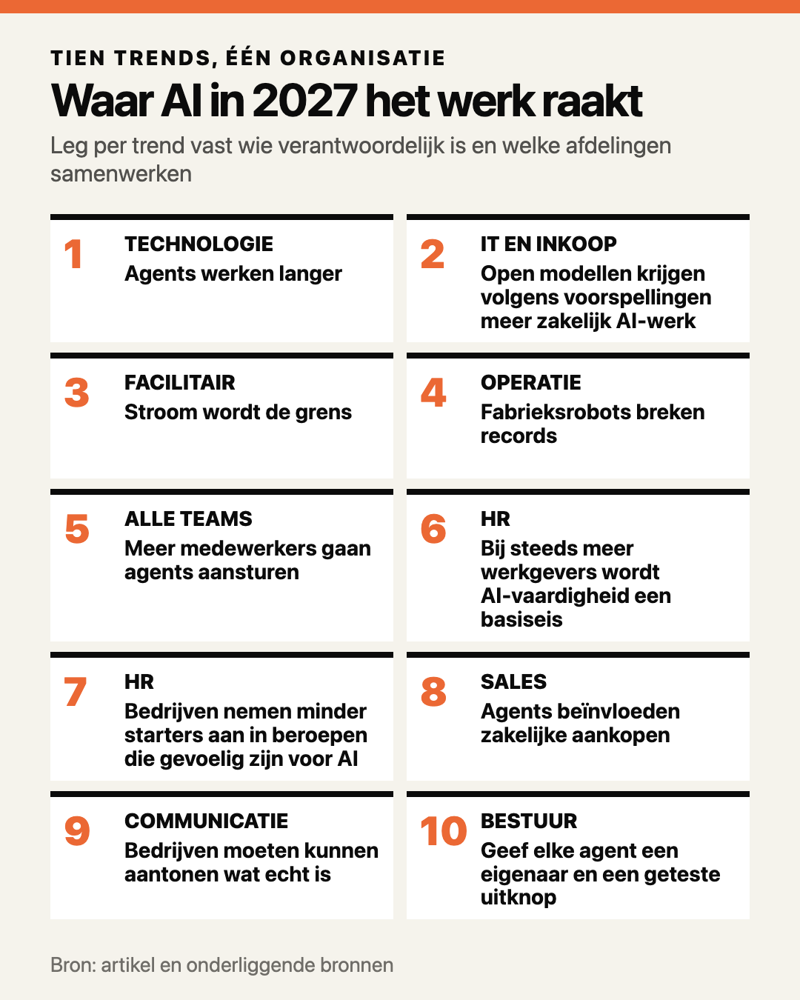
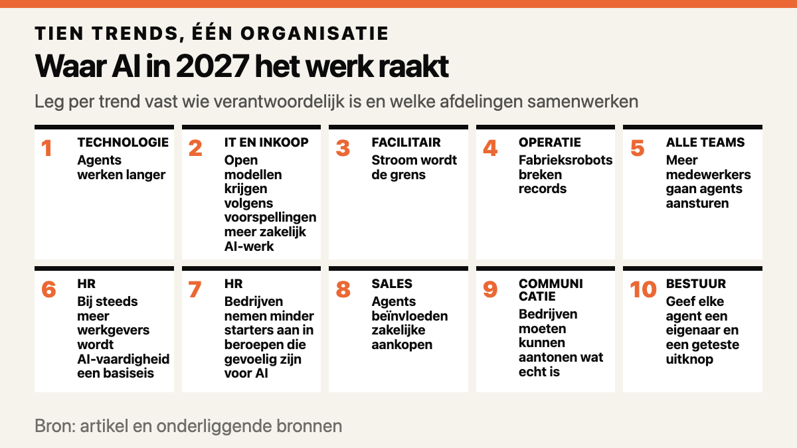
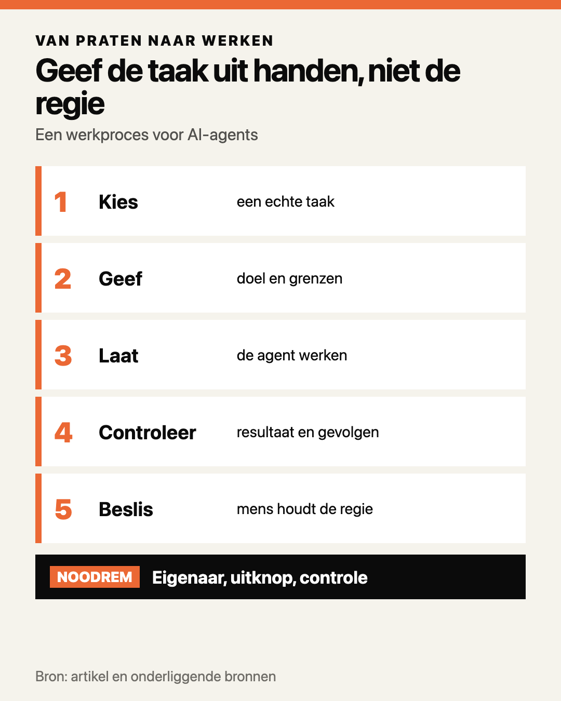
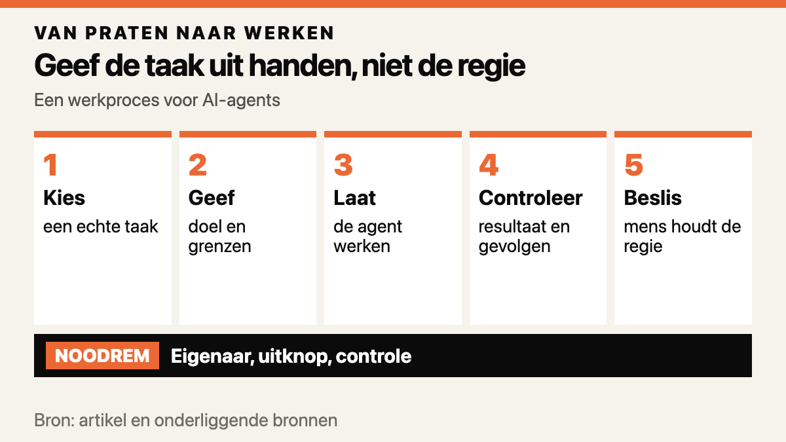

PROEF · INFOGRAPHIC
2027: het jaar dat AI ophoudt met praten en gaat werken
Drie vormen, elk staand (LinkedIn, Instagram) en breed (blog). Podium-stijl. Elk cijfer met bronnaam; meting zwart, verwachting oranje. Alle cijfers door Astra op betekenis gecontroleerd (5 rondes, GO).
1. Tijdlijn
Twee metingen en twee verwachtingen.

Staand 1080×1350

Blog 1200×675
2. Kaart
Tien trends, per organisatieonderdeel.

Staand 1080×1350

Blog 1200×675
3. Proces
Van praten naar werken, in vijf stappen.

Staand 1080×1350

Blog 1200×675
Keuzes
- Welke vorm (1, 2, 3, of meer)?
- Koppen op de kaart: voorzichtig zoals nu (feitelijk afgebakend), of korter en pakkender (bijv. "Open modellen worden standaard")?
- Opmerkingen per element komen straks in de werkplek; nu mag je ze gewoon in de chat geven.